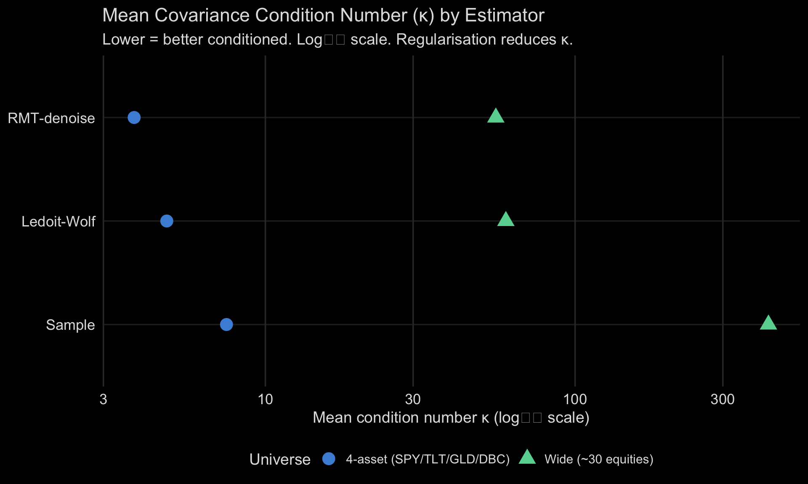
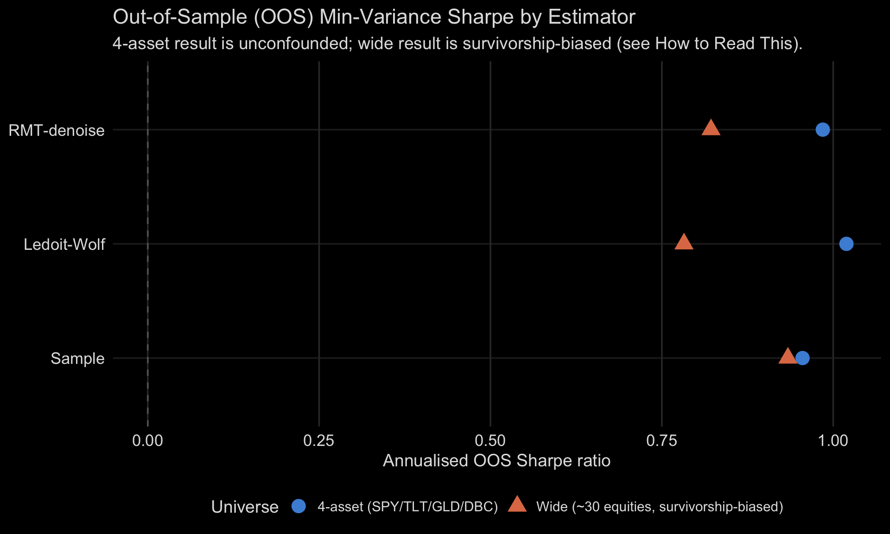
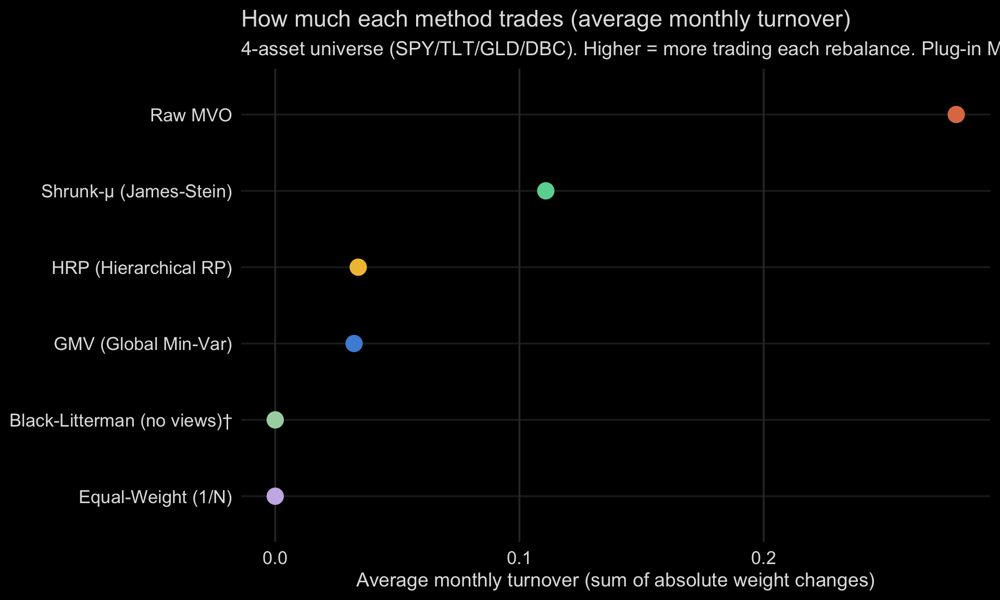

Falsification framework. Every strategy must survive multiple statistical tests before being considered genuine. A strategy that looks profitable may simply be disguised factor exposure (beta) rather than true alpha. This dashboard applies Harvey, Liu & Zhu (2016) and Lopez de Prado (2018) methodology.

- Genuine alpha: Alpha t > 2.0 AND R² (%) < 15. The strategy generates returns that known factors cannot explain, and factor exposure is low.
- Borderline: Alpha t near 2.0. May be genuine but evidence is weak. Requires out-of-sample confirmation.
- No alpha (beta): Alpha t < 2.0 OR R² (%) > 20. The strategy’s returns are explained by known factor exposure (market beta, momentum, value, etc.).
- HAC t: Newey-West HAC-corrected t-statistic on mean excess returns. Adjusts for serial correlation in returns. Values > 2.0 are statistically significant at the 5% level.
- Naive Sharpe: Annualised Sharpe ratio assuming iid (independent and identically distributed) returns. Typically overstates risk-adjusted performance by 20-30% due to volatility clustering.
- Alpha (%): Annualised Fama-French 5-Factor + Momentum alpha (intercept from regression). Represents returns not explained by these 6 factors. Positive = outperformance, negative = underperformance.
- Alpha t: HAC t-statistic on the FF5+Momentum alpha intercept. Must exceed 2.0 to be statistically significant. Higher values indicate stronger evidence against the null (returns = factor-driven beta).
- R² (%): Variance explained by the 6 Fama-French + Momentum factors. Low R² (< 15%) suggests the strategy’s returns come from genuine alpha. High R² (> 20%) suggests the strategy is just replicating known factor exposure.
Key insight: A strategy can have positive returns and still have zero alpha. If those returns come from market exposure (high R²), you can get the same exposure more cheaply via index funds.

A null environment generates synthetic return series with no genuine signal, but with realistic statistical properties. We test: “could a strategy generate the observed t-statistic just by chance in this environment?”
For each null environment, we generate M = 100 synthetic series, apply the strategy’s logic, and compute the HAC t-statistic. The rejection rate is the fraction that exceeds the observed t-statistic.
The 6 null environments (implemented in falsification.R):
- White Noise: iid N(0, sigma). Baseline — if a strategy “works” here, it’s pure luck.
- Regime Vol: Two-state volatility (high/low). Tests whether signal is just vol timing.
- MA(1): Autocorrelated returns (theta = 0.1). Tests whether signal exploits serial correlation friction.
- Factor Null: Random factor loadings matching observed factor covariance structure. Tests whether signal is just factor exposure.
- GARCH(1,1): omega = 1e-6, alpha = 0.09, beta = 0.90. Tests whether signal exploits volatility clustering.
- GJR-GARCH: Adds asymmetric leverage (gamma = 0.05). Tests whether signal exploits the leverage effect.
- Rejection rate < 8%: Strategy is easily replicated under the null — no genuine signal
- Rejection rate 8-20%: Borderline — may be noise
- Rejection rate > 20%: The null cannot explain the strategy’s performance — genuine signal

Strategy performance with Newey-West HAC correction. Columns: Naive Sharpe = uncorrected annualised Sharpe; Ann Mean/Vol (%) = annualised return and volatility; Naive t = t-statistic assuming iid returns; HAC t = t-statistic corrected for serial correlation (GARCH persistence); NW Lag = Newey-West bandwidth (Bartlett kernel, auto: floor(4(T/100)^(2/9))), average lag: 7.7. HAC t ranges from 1.85 to 4.58. Source: hd_hac_sharpe(), Ken French Data Library.*
Financial returns exhibit volatility clustering (GARCH persistence). Standard Sharpe ratios assume iid returns, which inflates the Sharpe by 20-30% on average.
The Newey-West correction (implemented in hd_hac_sharpe()):
- Uses a Bartlett kernel to downweight distant autocovariances
- Bandwidth = floor(4 * (T/100)^(2/9)) — automatic, data-driven
- Produces an HAC-consistent variance estimate for the mean return
- The HAC t-statistic = mean(r) / sqrt(HAC_var / T)
- HAC t > 2.0: Robust risk-adjusted return, survives serial correlation correction
- HAC t < 2.0: Naive Sharpe is inflated by autocorrelation; true risk-adjusted performance is weaker
- Mkt-RF: Market excess return (market - risk-free)
- SMB: Small Minus Big (size factor)
- HML: High Minus Low (value factor)
- RMW: Robust Minus Weak (profitability factor)
- CMA: Conservative Minus Aggressive (investment factor)
- Mom: Momentum (winners - losers, 12-2 month)
Alpha (%) is the intercept — the annualised return not explained by any factor. R² (%) measures how much of the strategy’s variance is explained by known factors.
Decision rules (matching Verdict in the Scorecard):
- Alpha t > 2.0, R² (%) < 15: Genuine alpha — returns come from something beyond known factors
- Alpha t > 2.0, R² (%) > 15: Alpha exists but significant factor exposure — investigate
- Alpha t < 2.0, R² (%) > 20: Disguised beta — just buy the factors directly
- Alpha t < 2.0, R² (%) < 10: Strategy is noise
Data source: Kenneth French Data Library, daily frequency. Implemented in hd_factor_null_test().
Testing 6 strategies inflates Type I error. The chance that at least one strategy exceeds t = 2.0 by pure luck is much higher than 5%.
K_eff (effective multiplicity):K_eff = K² / ||Σ||²_F — the spectral participation ratio of the pairwise correlation matrix. It measures how many truly independent strategies exist:
- K_eff = K: All strategies are uncorrelated (worst case for multiple testing)
- K_eff = 1: All strategies are perfectly correlated (just one independent bet)
- K_eff between 1 and K: Some independent structure
Harvey threshold: sqrt(2 * log(K_eff)) — the t-statistic a strategy must exceed to survive multiplicity correction at the 5% level. Based on Harvey, Liu & Zhu (2016), “…and the Cross-Section of Expected Returns.”
Delta-Z (IS-OOS gap):Delta-Z = max(t_IS) - max(t_OOS) — the gap between the best in-sample and best out-of-sample t-statistics. A large gap indicates overfitting:
- Delta-Z < 1: Modest overfitting, results likely robust
- Delta-Z 1-2: Some overfitting, treat with caution
- Delta-Z > 2: Severe overfitting, in-sample performance is misleading
In this framework, “in-sample” = HAC t-stat (strategy returns), “out-of-sample” = FF alpha t-stat (after removing known factor exposure). The OOS test is not a temporal holdout but a structural holdout — does the signal survive factor decomposition?
Crisis vs Calm (tail-weighted regime-conditional independence):K_eff measures diversification on the full sample, averaged across calm and turbulent periods alike. A portfolio can look diversified on average while its strategies quietly converge to the same bet exactly when a crash hits — the moment diversification is actually needed. hd_tail_keff_frob() tests for this directly: it splits the 6-strategy monthly return matrix into a crisis regime (any month where at least one strategy falls below its own 5% lower-tail quantile) and the complementary calm regime, then recomputes K_eff_frob separately within each.
- K_eff_frob (crisis) ≈ K_eff_frob (calm): diversification is regime-stable — the independence you see in normal markets is still there when it matters.
- K_eff_frob (crisis) < K_eff_frob (calm): diversification is collapsing precisely during drawdowns — strategies that look independent on average are converging to a single correlated bet in a crisis.
The tab also reports the mean lower tail dependence coefficient (lambda_L) across all 15 strategy pairs, via hd_tail_dependence() — the conditional probability that one strategy is in its own worst 5% of months given that another strategy is in its worst 5% — and the mean pairwise drawdown overlap fraction via hd_drawdown_overlap(), the fraction of days two strategies are simultaneously underwater. Both are complementary evidence for the same question: do the 6 strategies actually lose money together?
Does regularising the covariance estimator — via Ledoit-Wolf (LW) shrinkage or Random Matrix Theory (RMT) denoising — improve out-of-sample (OOS) global minimum-variance (GMV) portfolio performance relative to the plain sample estimator? This section presents a walk-forward diagnostic across two universes per Raviv (2026).


A 60-month rolling walk-forward backtest estimates global minimum-variance (GMV) portfolio weights from each covariance estimator using only the training window. The next-period (t+1) return is computed from the resulting weights — strictly no look-ahead (per the alpha-decay-min-t+1 rule: t+0 execution is impossible). The three estimators compared are:
- Sample — classical sample covariance: S = (1/(n−1)) X’X.
- Ledoit-Wolf (LW) — linear shrinkage toward a constant-correlation target, with analytically optimal intensity δ* (no cross-validation). Guarantees positive-definiteness for any p and n. Implemented in
hd_cov_estimate(method="ledoit_wolf"). - RMT-denoise — Random Matrix Theory (RMT) Marchenko-Pastur clipping: eigenvalues below the noise threshold λ+ = (1+√(p/n))² are replaced by their common mean, removing noise components while preserving trace. Implemented in
hd_cov_estimate(method="rmt_denoise").
GMV weights are computed by hd_min_var_weights() from the estimated covariance via unconstrained matrix inversion; see its documentation for the normalize = TRUE default (weights sum to 1). The walk-forward engine is hd_cov_oos_diagnostic().
Condition number κ: max eigenvalue / min eigenvalue. A well-conditioned matrix has κ = O(10–100); κ > 10,000 indicates near-singularity and numerical instability in inversion. The Conditioning tab uses a log₁₀ x-axis because condition numbers span multiple orders of magnitude across methods.
Honest interpretation:The conditioning benefit of regularisation is unambiguous in both universes — Ledoit-Wolf and RMT-denoise produce substantially lower condition numbers than Sample regardless of the p/n ratio.
The out-of-sample (OOS) Sharpe comparison is clean only on the 4-asset universe (SPY/TLT/GLD/DBC, p/n ≈ 0.07): regularised estimators outperform Sample on Sharpe, confirming the expected benefit in a well-studied, non-survivorship-biased universe.
The wide universe result (~30 large-cap US equities, p/n ≈ 0.50) shows Sample OOS Sharpe exceeding LW and RMT. This is NOT evidence against regularisation. The wide panel contains only currently-listed tickers — firms that survived to the present day — with no delisted firms included. Survivorship bias inflates all methods’ OOS returns, but it especially advantages whichever estimator happens to concentrate more weight in the best-surviving stocks. This is a dataset artefact, not a property of the estimators.
Why the default COV_METHOD stays “sample”:The deployed strategy universes (4–6 assets) operate at p/n ≪ 0.1, where the sample covariance is already well-conditioned. The regularisation benefit is most important in wide regimes (p/n ≥ 0.1). COV_METHOD is the documented knob to flip when deploying a wide or point-in-time universe — set COV_METHOD <- "ledoit_wolf" in R/cov_config.R and re-run tar_make().
References: Raviv (2026), WIREs Computational Statistics, doi:10.1002/wics.70068. Full digest: knowledge/wiki/covariance-estimation-wide-data.md. Issue #498.
How you turn a set of assets into portfolio weights matters. This section compares six ways to do it on the same four assets (SPY, TLT, GLD, DBC), rolling forward month by month: plug-in mean-variance (MVO), global minimum-variance (GMV), shrunk-return MVO, Black-Litterman, equal-weight (1/N), and hierarchical risk parity (HRP). The textbook MVO recipe (Michaud 1989) builds weights straight from raw sample estimates, so small errors in those estimates turn into big, unstable bets — heavy trading and most of the money piled into one asset. The other five regularise or sidestep the estimates and stay far steadier. Note the honest result below: on only four well-behaved assets, MVO’s instability shows up as trading and concentration, not as a worse return — that penalty arrives in larger universes.

A 60-month rolling walk-forward backtest estimates portfolio weights using each construction method from the training window (no look-ahead). The next-period (t+1) return is applied to the estimated weights — strictly no look-ahead per the alpha-decay-min-t+1 rule. Six methods are compared:
- Raw MVO — Plug-in tangency portfolio w ∝ Σ⁻¹μ from the sample covariance and sample mean, with no regularisation. Small errors in the estimated returns swing the weights hard, so it trades heavily and piles into a few assets. It also breaks down (singular sample Σ) once the number of assets approaches the training-window length.
- GMV (Global Min-Var) —
w ∝ Σ⁻¹1via a regularised (Ledoit-Wolf) covariance. No expected-return input. Implemented inhd_min_var_weights(). - Shrunk-μ (James-Stein) — Tangency portfolio using Bayes-Stein (Jorion 1986) shrinkage on μ toward the grand mean, with a regularised Σ. Implemented in
hd_returns_shrink(method = "james_stein"). - Black-Litterman (no views) — Tangency portfolio from the BL (1992) posterior μ̂ and Σ_BL using
hd_black_litterman(). Shown here with no investor views (w_mkt = 1/p, risk_aversion = 2.5). With no views, Black-Litterman just returns the equal-weight starting point, so its row matches Equal-Weight below. That is expected behaviour, not a bug — there are no views to tilt away from. - Equal-Weight (1/N) — The robust benchmark. Zero turnover by construction.
- HRP (Hierarchical Risk Parity) — Lopez de Prado (2016) hierarchical diversification using a regularised Σ. Implemented in
hrp_weights().
- Avg turnover — Mean L₁ weight change between consecutive OOS windows: mean(‖w_t − w_{t−1}‖₁). Higher = more rebalancing cost. Equal-Weight = 0 by construction.
- Max weight — Mean across windows of the largest absolute weight. Equal-Weight → 1/p = 0.25 for 4 assets. Raw MVO → values often exceed 1: a leveraged bet (more than 100% in one asset, funded by short/negative positions in the others), which the unconstrained optimiser permits and the regularised methods do not.
- OOS Sharpe — Annualised Sharpe ratio of OOS portfolio returns (mean/sd × √12) over non-failed windows. On this 4-asset universe 0 of 182 windows failed for every method (the covariance is never singular with 4 well-behaved assets); failures only occur in wide universes where the asset count approaches the training-window length. Windows where weight construction fails (e.g. singular sample Σ for raw MVO) are counted but excluded from all performance metrics and from this table.
- Effective holdings — Mean effective number of holdings (1/Σw_j²; Herfindahl measure). Equal-Weight → p = 4; concentrated raw MVO → near 1.
The diagnostic is designed to confirm, not discover. The Michaud (1989) error-maximiser result is well-established theory: raw MVO’s turnover and concentration metrics should exceed those of stable alternatives on any reasonably short training window. The 4-asset universe (p = 4, n = 60 months) gives p/n = 0.07 — the sample covariance is well-conditioned here, so raw_mvo rarely fails; the instability is in the μ estimation channel, not Σ. That is why Shrunk-μ and BL (expected-return regularisers) show a different benefit than GMV (a Σ-only regulariser).
References: Michaud, R. O. (1989). “The Markowitz optimization enigma: Is ‘optimized’ optimal?” Financial Analysts Journal, 45(1), 31–42. Jorion, P. (1986). “Bayes-Stein Estimation for Portfolio Analysis.” JFQA, 21(3), 279–292. Black, F. & Litterman, R. (1992). “Global Portfolio Optimization.” FAJ, 48(5), 28–43. Lopez de Prado, M. (2016). “Building diversified portfolios that outperform out-of-sample.” JPM, 42(4), 59–69. Implemented in hd_weight_stability_diagnostic(). Issue #507.
WFC (Martyn Tinsley, 2026) is a single-number diagnostic for over-fitting across the whole optimisation surface. Traditional walk-forward analysis asks “does the best in-sample parameter survive out-of-sample?” WFC instead asks “across every parameter combination, does in-sample performance predict out-of-sample performance?”
Calculation: For each strategy with a tunable parameter vector θ, compute the in-sample Sharpe X(θ) and out-of-sample Sharpe Y(θ) for every point on the grid. WFC = Pearson ρ(X, Y) over all θ.
Diagnostic 2×2 matrix (Tinsley p.4):| High WFC (ρ ≥ 0.70) | Low WFC (ρ < 0.40) | |
|---|---|---|
| +OOS | structural_edge — low over-fitting |
spurious_luck — high over-fitting |
| −OOS | consistently_loss_making |
noise — no edge |
Calibration points from the paper (Figure 4): high ≈ 0.881, moderate ≈ 0.581, low ≈ 0.234. This project uses 0.70 as the high/moderate boundary (midpoint of moderate–high range).
Strategies included:- Factor MAX — parameter grid:
top_n ∈ {1, 2, 3, 4, 5}(5 grid points) - Factor DRIF — parameter grid:
alpha ∈ {0.00, 0.25, 0.50, 0.75, 1.00}(5 grid points); lambda chosen bycv.glmnetinternal CV
Strategies not included: OLMAR, TOM, and other non-parametric strategies have no tunable grid. XGB DRIF operates at the stock level (not a factor-rotation grid); factor-level XGB is tracked as a follow-up to #318.
Reference: Tinsley, M. (2026). “Walk Forward Correlation.” Trade Like A Machine Ltd. SSRN 6324079. Implemented in hd_wf_correlation().
Two liquidity mechanisms exist in this codebase and neither one currently removes an illiquid stock from a backtest portfolio — this section surfaces both, plus the one liquidity diagnostic (stk_max_adv_cap_impact) that the backtest-robustness rule requires to be reported and that had never been displayed on any dashboard before this tab (#625).
min_adv_threshold= $1M (R/plan_liquidity.R, and the default infilter_liquidity()) — a universe-wide liquidity flag. It answers “is this name tradeable at all” and governs the Universe Summary / Volume Stats tabs above.stk_params$adv_threshold= $5M (R/plan_stock_backtest.R:399) — a stricter investability gate used only inside decile construction for the Factor MAX / DRIF stock backtests (#312). It is higher because a long-short decile book concentrates capital in far fewer names than the full universe.
Neither value governs the other, and filter_liquidity() runs in filter_mode = "warn" — it flags illiquid rows but removes nothing, for both the ingestion-side (equity_liquidity_filtered) and dashboard-side (equity_daily_liquidity_filtered) targets. stk_universe (R/plan_stock_backtest.R:421) does not depend on either filtered target — the dependency runs the other way (equity_daily_liquidity_filtered is derived from stk_universe, not vice versa). Illiquid stocks are not excluded from any backtest portfolio shown on this dashboard today. Do not read the Universe Summary / Volume Stats tabs as implying otherwise; they are a diagnostic, not a filter.
Universe Summary / Volume Stats now wired in (#625, resolved 2026-08-04): the two tabs above are computed by plan_liquidity_dashboard() in R/plan_liquidity.R, which re-expresses the same calculate_adv() → filter_liquidity() → liquidity_summary() pipeline against stk_universe instead of consolidated_equity (which only exists in the root ingestion pipeline). This means the two tabs describe the top-market-cap dashboard universe, not the full ingested equity universe — see the per-table captions above for the exact scope. The original plan_liquidity() targets (liquidity_summary_tbl, volume_stats) are unchanged and still run only in the ingestion pipeline (root _targets.R); this dashboard has never depended on them. Provenance risk: nothing asserts the two equity sources (consolidated_equity vs. stk_universe) agree, so the ingestion-side and dashboard-side liquidity summaries can diverge — this is flagged as a follow-up in #625, not resolved here. Also unverified: this PR could not run tar_make() (concurrent-store conflict with other work on this repo), so neither of these two tabs has been confirmed to actually render — the “Not available” fallback text above will show if the target has not yet been built by a subsequent pipeline run.
ADV-Cap Impact (MAX HRP) is a live target (stk_max_adv_cap_impact) already built by the deployed pipeline — it compares the HRP-weighted Stock MAX portfolio with and without the 10% ADV participation cap, and this tab is the first place it is displayed.
- Null environment testing: Generates 100 synthetic series per environment (6 environments) to test whether a strategy’s t-statistic could arise by chance
- HAC correction: Adjusts for serial correlation in returns (GARCH persistence inflates naive Sharpe by ~20-30%)
- Factor regression: Decomposes returns into known factor exposure (beta) and residual alpha
- Multiplicity correction: Adjusts for testing multiple strategies simultaneously (K_eff, delta-Z)
- DSR (Deflated Sharpe Ratio): Lopez de Prado’s adjustment for skewness, kurtosis, and number of trials. Corrects the Sharpe ratio for non-normality — a strategy with negative skew (fat left tail) has an inflated Sharpe. See #53 comment for implementation plan.
- Does not test for look-ahead bias (handled by the
look-ahead-bias-preventionrule) - Does not test for transaction cost sensitivity (handled by
execution-delay-sensitivity— alpha decay analysis) - Does not test for parameter sensitivity (handled by
backtest-robustness— bootstrap CI) - Does not test for temporal stability (handled by
backtest-partitions— train/test/validation split) - Does not test for cross-geography pervasiveness (requires international data — see #58)
- Harvey, C., Liu, Y., & Zhu, H. (2016). “…and the Cross-Section of Expected Returns.” Review of Financial Studies, 29(1), 5-68.
- Lopez de Prado, M. (2018). “The Deflated Sharpe Ratio: Correcting for Selection Bias, Backtest Overfitting, and Non-Normality.” Journal of Portfolio Management, 40(5), 94-107.
- Newey, W. K., & West, K. D. (1987). “A Simple, Positive Semi-definite, Heteroskedasticity and Autocorrelation Consistent Covariance Matrix.” Econometrica, 55(3), 703-708.
- Fama, E., & French, K. (2015). “A Five-Factor Asset Pricing Model.” Journal of Financial Economics, 116(1), 1-22.
Simplified view: strategies as single nodes. 27 nodes, 38 edges in the full DAG. Click any strategy node to view its source code. Click diagram to zoom fullscreen.
Node colours: Factors (blue) | Macro (gold) | Regime (orange) | Signals (purple) | Returns (green) | Outcomes (red) | Structural (grey). Yellow dashed = violated implication. Green = tested, holds. Source: plan_causal_graph.R.
Full DAG tab rendered: 2026-08-25 14:03:17 BST | commit: 9015a80
DRIF selects the best-performing FF factor each month. Loads on HML, SMB, Mom, RMW. Yellow dashed edge: VIX affects HML in crises (r=-0.17). Source: plan_drif.R.
DRIF tab rendered: 2026-08-25 14:03:17 BST | commit: 9015a80
Factor MAX selects the top-momentum factor. Premium has decayed >50% (#73). Source: plan_factormax.R.
LTR uses XGBoost for cross-sectional stock ranking. Loads on Mom + SMB. Rate regime feeds into signal. Source: plan_ltr_momentum.R.
This diagram is the first version (Phase-0 prototype) of the master navigation layer described in issue #481 and built as part of issue #514. It shows the MVO / portfolio-construction subsystem shipped in issues #498 (covariance estimator), #512 (returns shrinkage), and #513 (Black-Litterman), and the two dashboards that surface its outputs.
Each node is clickable and links to the exact function definition in source, pinned to commit b346d80. Hover any edge for a tooltip explaining the data-flow. Future PRs extend this seed diagram to the full strategy graph (factor layer, DRIF / FMAX / LTR / RSC nodes, and cross-dashboard navigation).
Node colours follow the diagram colour palette: Covariance Estimator (subgraph) | Expected Returns (subgraph) | Weight Engines (subgraph) | OOS Diagnostic (single node) | Dashboards (subgraph).
What the DAG encodes: Every arrow is a causal assumption from our strategy pipeline — “X causes Y” or “X determines Y”. If the assumption is wrong, the arrow should be removed or redirected.
How to read the tests: Each conditional independence claim says “if our DAG is correct, then X and Y should be unrelated after controlling for Z.” A partial correlation near zero confirms the claim; a large partial correlation violates it.
Violated: HML ⊥ VIX (r = -0.17)The value factor (HML) and volatility index (VIX) are NOT independent. This means:
| Impact area | What it means | Action |
|---|---|---|
| DRIF strategy | DRIF loads on HML. During VIX spikes, DRIF underperforms MORE than the Vol_regime node alone predicts. | Consider reducing DRIF weight in crisis regimes |
| Multi-strategy portfolio (#52) | Diversification between VIX overlay and value-heavy strategies is LESS than K_eff suggests — they correlate in crises, exactly when diversification matters most | Recompute weights with crisis-conditional correlations |
| Tail independence (#55) | K_eff_crisis < K_eff_calm is expected — this finding explains why | See the Crisis vs Calm tab, computed via hd_tail_keff_frob() |
| DAG revision | Need either: VIX → HML edge (direct), or latent “Crisis_mode” → {VIX, HML} | Added VIX → HML edge (dashed yellow in diagram) |
Economic explanation: In crises, investors sell risky assets indiscriminately. Value stocks (high book-to-market) are often distressed firms — they get sold first. Simultaneously, VIX spikes as options demand surges. The correlation is not VIX causing value to fall, but both responding to the same flight-to-safety mechanism.
Temporal split finding: The HML-VIX link was stronger pre-2010 (r=-0.26) and has weakened post-2010 (r=-0.14). This is the opposite of the crowding hypothesis — the crisis-value correlation peaked during 2000-2010 (dot-com crash + GFC), not after factor investing became popular. The VIX-HML edge in the DAG is most relevant for crisis periods, less so in recent calm markets.
Causal DAG for the portfolio: 27 nodes and 38 directed edges, encoding causal assumptions across factors, macro signals, regime states, strategy signals, returns, and portfolio outcomes. DAG validity (acyclic): TRUE. Five conditional independence implications were tested via partial correlation: 4 hold (|r| < 0.15), 1 violated (|r| ≥ 0.15), 0 skipped (data unavailable). Implications with |r| ≥ 0.15 suggest the causal structure requires revision. HML-VIX correlation by period: Pre-2010 r= -0.262 (n= 60 ); 2010+ r= -0.139 (n= 194 ); Full r= -0.167 (n= 254 ).Source: R/plan_causal_graph.R.
The Tinsley framework (Pillar 8) distinguishes two types of drawdown: survivable steady drawdowns (losses spread across many periods, allowing recovery) versus unsurvivable clustered drawdowns (losses arrive in bursts, exhausting capital before recovery). Two metrics quantify this distinction:
- Avg / Max DD duration — how long drawdowns last on average and at worst. Longer durations imply the strategy requires patience to survive; very long max-duration periods indicate structural fragility.
- Loss clustering (
clustered = TRUE) — detected when the Wald-Wolfowitz runs test rejects independence of the sign-of-return sequence (p < 0.05) and the lag-1 autocorrelation exceeds 0.2. Both signals must agree: the runs test catches non-random alternation patterns; the ACF catches momentum / persistence. A clustered strategy has correlated losses — a drawdown predicts more drawdown.
Drawdown duration uses the high-water mark (HWM) definition: a drawdown begins when cumulative returns fall below the prior peak and ends when they recover to within 0.1% of that peak. Durations are converted from strategy observations to calendar days using each strategy’s annualisation factor (252 for daily, 12 for monthly).
Loss clustering test combines two signals:
- Wald-Wolfowitz runs test on the sign of returns. Under independence, the number of sign-runs follows an approximately normal distribution. Too few runs = clustered losses/wins; too many = alternating.
- Lag-1 autocorrelation of raw returns. Positive ACF(1) > 0.2 indicates momentum (losses predict more losses).
The clustered flag requires both signals to agree to reduce false positives. The runs test has power against any non-random pattern; ACF specifically targets persistence.
Source code: hd_dd_duration() and hd_loss_clustering() in packages/historicaldata/R/risk_metrics.R. Tests in test-risk-metrics.R. Issue #269.
- Strategy Leaderboard — displays the falsification scorecard verdicts alongside performance rankings; leaderboard surfaces what this page proves
- Evidence & Context — per-strategy failure cards, lessons learned, and 155 years of equity premium across 18 countries; companion document to this page’s verdicts
- Momentum Pre-Peak — the most recent gauntlet run; applies HAC, FF5, CPCV PBO, and Walk-Forward Correlation from this framework
Strategies that fail the falsification gauntlet (Alpha t < 2.0) reveal where market intuition breaks down. Their returns are explained by known factor exposure (beta) or statistical noise — not genuine alpha. Publication bias in finance means failed strategies are rarely documented; this section corrects that.
- Do not include Avoid Worst Days or Risk State Classification in the multi-strategy portfolio (see issue #52).
- VIX-based overlays add cost and complexity without alpha — use passive SPY instead.
- Factor rotation (DRIF, Factor MAX) is where the genuine alpha lives.
- Cross-sectional momentum (LTR) needs scaling before inclusion — promising but unconfirmed at production scale.
For per-strategy failure cards and lessons learned, see Evidence & Context → Negative Results tab.